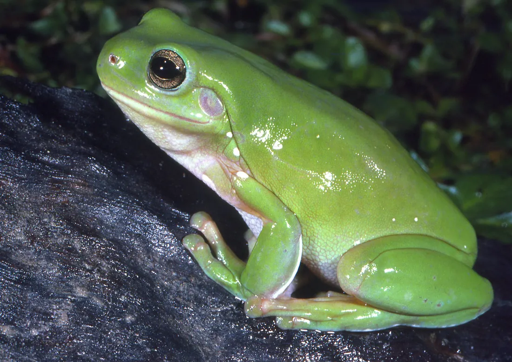
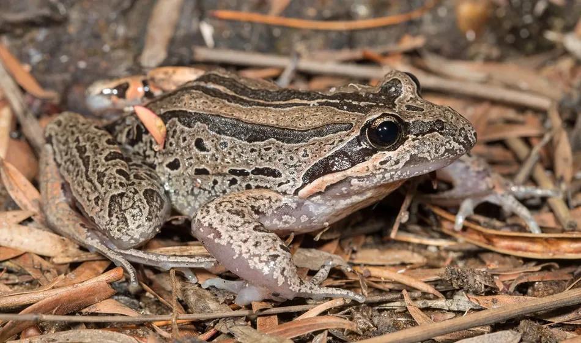
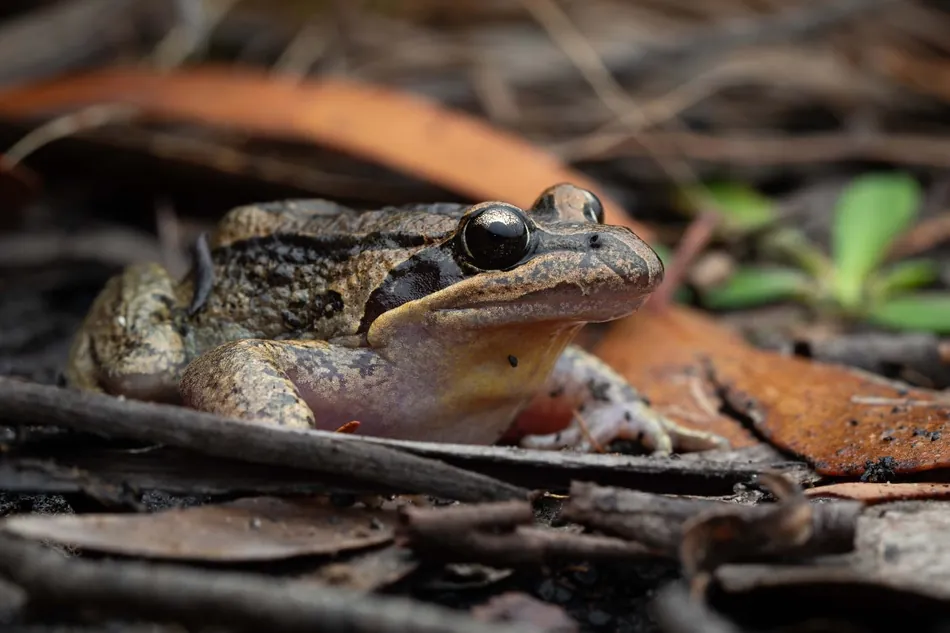

From Geographic Diversity to Recorded Species
The first map shows how frog species richness varies across Australia. However, it is important to show how often people see these species in each state as well.
AUSTRALIAN BIODIVERSITY
A deeper dive into lives of these green creatures.

Chapter 1 · Land of Frogs and Amphibians
Australia is known for having unqiue animals across the nation. frogs and anmphibians are also one of the animals that can be found nation wide. these little creature are part of Australias wide life.
Australia's frog diversity is far from evely distributed. As shown below the diversity richness of amphibians can be seen for each state. the state with darker shade of green have a higher richness on average.
Darker shades mark regions means more verity of frogs. Eastern state as shown above tend to have greater diversirty due to their ideal living conditions for these animals.
Species richness represents the number of different species mapped in a geographic region, not the number of individual frogs.
Source: Australian Frog Atlas 4.0 (2026).
The first map shows how frog species richness varies across Australia. However, it is important to show how often people see these species in each state as well.
This map compares the number of frog species recorded in each state with the number predicted by a species area. Green regions have more recorded species than predicted, while brown regions have fewer.
Green means more recorded distinct species than the land area model predicts; brown means fewer.
The map plots observed ÷ expected distinct species under a state area model (1× = as predicted). Observation differs between region.
Source: Australian Museum, FrogID Dataset 7.0 (2017–2024). Land areas: Geoscience Australia .
Queensland has the highest unqiue number of frogs 106 species. A separate species per area calculation puts the ACT first at 6.785 distinct species per 1,000 km², followed by Tasmania (0.175) and Victoria (0.149).
Due to the smaller size ACT smaller change in value can siginificantly effect the calculation.
These differences may reflect environmental conditions, geographic distributions and variation in recording effort.
Chapter 2 · What are the most common types?
The maps above tells about the richness of amphibian. However, they fail to mention which one of these species are the most frequent visitors.
Switching from places to species reveals a different side of this story: some frogs dominate nationally while others feature much more strongly in particular states.
Comparing a national ranking with state level percentages helps separate overall popularity in the records from regional prominence.

Each cell show the percentage of one tghe top 10 frogs species across each state.
Darker cells indicate a larger share of that state's FrogID records. Percentages are calculated within each state, they do not compare to the total value for the state.
FrogID occurrence records do not represent the number of individual frogs. Recording effort varies by location.
Source: Australian Museum, FrogID Dataset 7.0 (2017–2024).
Total number of FrogID observation across the nation.
The Common Eastern Froglet leads the national ranking, followed by the Striped Marsh Frog. Bar length shows the number of occurrence not the total population size.
FrogID occurrence records do not represent the number of individual frogs. Recording effort varies by location.
Source: Australian Museum, FrogID Dataset 7.0 (2017–2024).
Species participation
The ranking and heatmap describe the mix of submitted observations between 2017 and 2024. Before treating those records as a snapshot of the natural environment, we need to consider how the number of submissions itself has changed.
A species may appear more often simply because more people are recording.
Annual FrogID occurrence records across Australia from 2017 to 2024. Each point shows the number record for that year.
Number of record from 2017 start a slow rise and from 2019 it increases massively. Reaching the peak in 2022 followed by slow decline to 2024.
Changes reflect recording activity and participation, rather than changes in the number of individual frogs. Years may have different periods of coverage in the dataset.
Source: Australian Museum, FrogID Dataset 7.0 (2017–2024).
Chapter 3 · The seasonal changes
Annual totals tell us how recording activity changes every year, but they show an important pattern that happens over the years.
Frogs record is not distributed evenly across the nation. To get better understanding we need to explore the data for the top 10 frogs tghourghout each month of the year.
FrogID recordings change throughout the year. But are these seasonal patterns the same for every frog species and every Australian state?
Each flowing band represents one of Australia's ten most frequently recorded frog type. Thicker bands represent more occurrence records.
The flowing bands become more prominent in the later months of the year, highlighting a strong seasonal concentration in submitted records. Use the species selector to isolate one species and examine its timing.
Source: Australian Museum, FrogID Dataset 7.0 (2017–2024).
The national streamgraph shows the recorded number for slected species across the nation. However, it begs the questions that if the pattern repeats itself at every state or not. Will the state with more ideal weather type be the same as the others?
Each bar shows the percentage of FrogID records submitted in summer, autumn, winter and spring for each Australian state.
Each state's bar adds to 100%, making it possible to compare seasonal composition regardless of total recordings. The Northern Territory and Queensland show different seasonal mixes from several southern states. Try the year selector to check whether these differences persist.
Summer: Dec–Feb; Autumn: Mar–May; Winter: Jun–Aug; Spring: Sep–Nov. The chart shows recording patterns, not estimated frog populations.
Source: Australian Museum, FrogID Dataset 7.0 (2017–2024).
Chapter 4 · What are the high frog activity locations?
The seasonal patterns reveal when people submit observations. But there is also a geographic dimension to recording : some locations produce more data observation than others.
Exploring these concentrations can help identify areas with substantial amphibians enthusiast. It also reminds us that an observation hotspot does not necessarily mean a population hotspot.
FrogID observations are not distributed evenly across Australia.The map below shows the concentration of the of the frog per location.Different circle sizes shows higher concentration of frogs per 1 dgree cell.

Larger circles cluster along Australia's eastern and southeastern regions. This concentration may reflect a more ideal habitat for frog species, or more frog lovers who recorded their observations.
Each circle represents a 1° × 1° geographic cell. High recording activity may reflect proximity to population centres and differences in amphibian lovers, rather than greater frog population abundance.
Source: Australian Museum, FrogID Dataset 7.0 (2017–2024).
The proportional circles reveal major recording hotspots. A dot density map offers another view of the same underlying concentration, distributing symbols within geographic grid cells to reveal broader spatial patterns.
Each dot represents approximately 500 FrogID occurrence records between 2017 and 2024.
The distribution enforces the high density population around the eastern state. Each dot represent 500 record within that area.
Dot locations are approximate and distributed within 1 degree geographic cells. They represent recording activity, not individual frogs or frog population abundance.
Source: Australian Museum, FrogID Dataset 7.0 (2017–2024).
From observation locations to species ranges
Because records are clustered, mapping submission density alone can obscure the differences between species. Latitude distributions offer another perspective: some commonly recorded frogs are observed across a broad north south band, while others are concentrated in narrower parts of Australia.
Compare the latitude distributions of Australia's ten most frequently recorded FrogID species between 2017 and 2024.
A box farther right represents recordings at closer to Northern latitude; its width captures the middle half of recorded latitudes.
Boxes show the middle 50% of recorded latitudes; the dark line marks the median. Whiskers extend to the most extreme values within 1.5 interquartile ranges.These distributions reflect recorded locations and recording effort, rather than complete species ranges.
Source: Australian Museum, FrogID Dataset 7.0 (2017–2024).
Chapter 5 · A daily hour window
We have considered the population from different dimension such as states, season, and latitude. But there is one last dimension we need to consider whihc is time of the day.
FrogID events are strongly concentrated in the evening, which can reflect both frog calling patterns and the choices of volunteers who listen and record.
The clock shows the national pattern. Each ridge line shows the total number of recording for that hour.
Explore the share of FrogID recording events by local hour from 2017 to 2024. Use the dropdown to compare Australia with individual states and territories. Longer, darker segments indicate a larger share of events.
Across Australia, the displayed peak is 8–9 PM, accounting for 15.4% of recording events. Use the state dropdown to test whether that same hour dominates locally.
Each segment represents one hour of the day. Percentages are calculated within the selected region. The clock shows the number of activity rather than total number of frogs.
Source: Australian Museum, FrogID Dataset 7.0 (2017–2024).
The national evening peak describes all FrogID recording events together.
The ridgeline chart shows the ten most frequently recorded frogs, allowing comparison between different species of frogs.
Compare hourly recording patterns for the ten most frequently seen Frog species. Use the dropdown to highlight a species and hover over its curve for recording counts and percentages.
Each ridge is normalised within its own species. A higher ridgeline is an indication for a activity recorded.
Each ridge shows hourly shares within one species, smoothed for readability. Higher peaks indicate a larger share of that species' recordings, rather than more records than other species. The dashed line marks 8 PM.
Source: Australian Museum, FrogID Dataset 7.0 (2017–2024).
The Final Chapter
Australia's frogs distribution varied across the nation. This population depneded on enthusiast who recorded their observation, which resulted in to have deeper look at this data from different dimension.
Frog richness varies across the country, while Queensland has the greatest number of distinct FrogIDrecorded species in the state comparison. Area normalised and model relative views answer different questions and can change which places stand out in terms of number of species.
The Common Eastern Froglet tops the national record count, but each state's mix of recorded species differs. National totals alone cannot explain local distributions.
Submitted records are not evenly distributed across the year or the day. They increase strongly toward spring and early summer, and the national evening peak occurs between 8 PM and 9 PM.
To investigate changes in frog populations the next step would be to combine standardised surveys, repeated sampling and information on sampling effort with habitat and environmental data.
data gathered from enthusiast remain invaluable for discovering patterns and guiding questions, provided those limits stay visible.